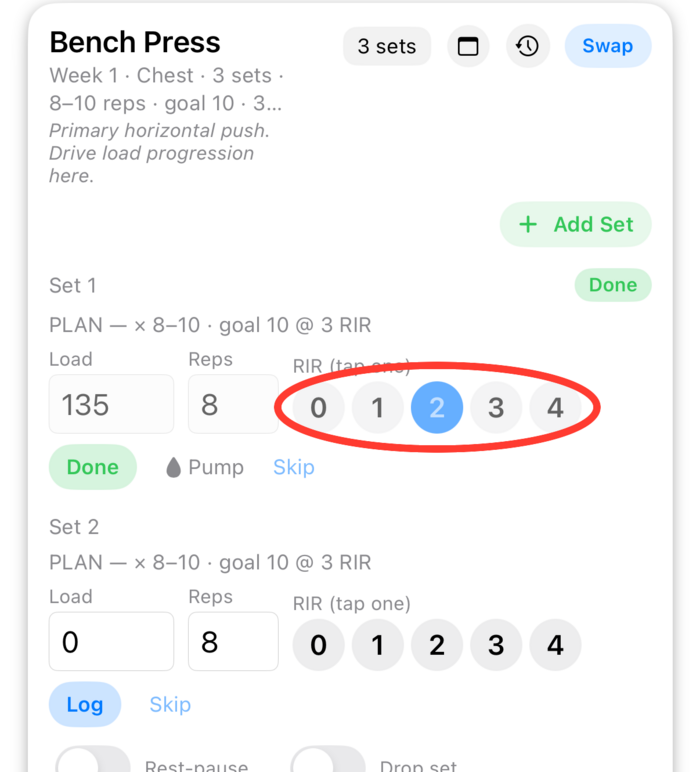
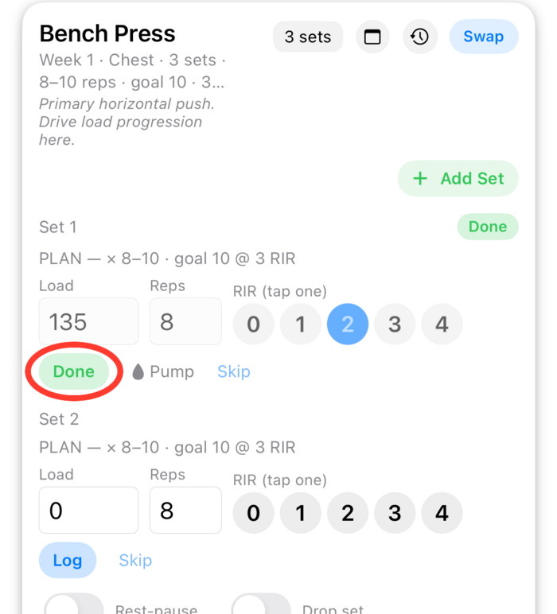
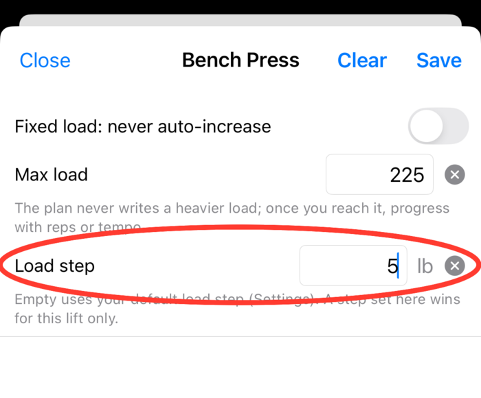
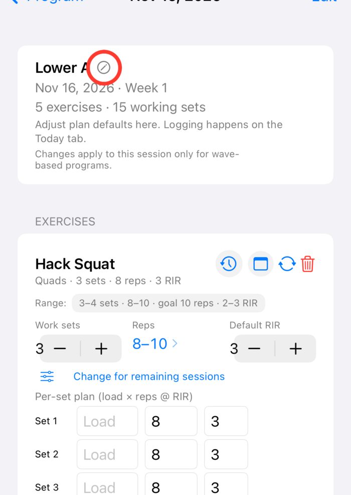
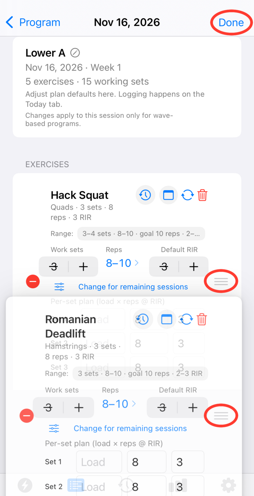
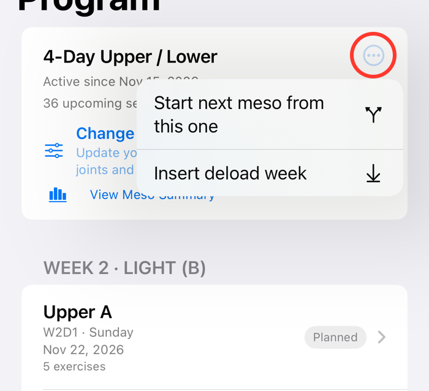
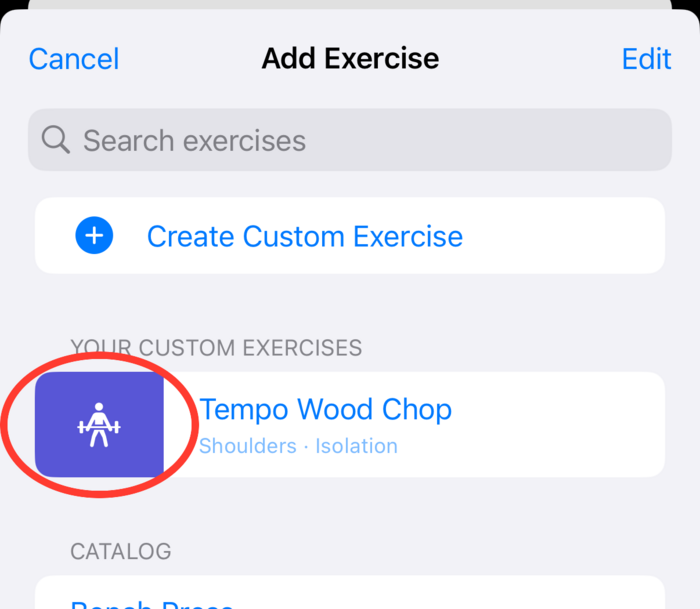
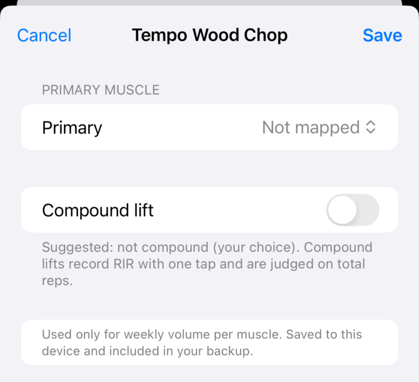
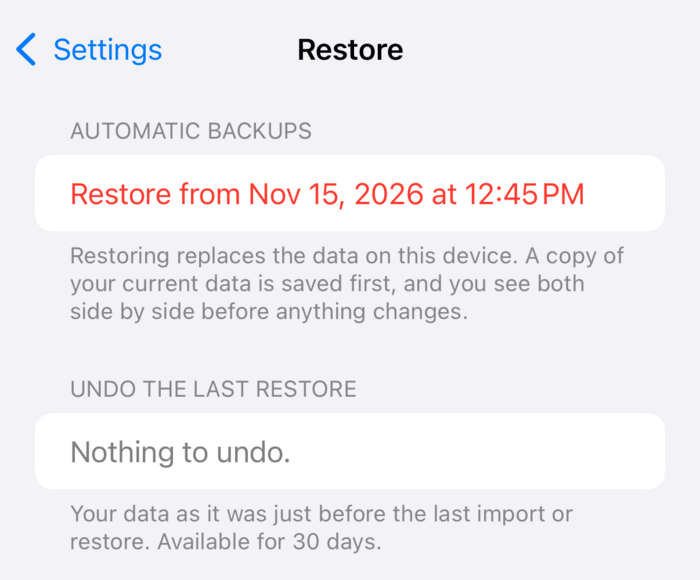

Elite Performance runs your training block for you: it gives you a program, you train and log your sets, and it writes the loads for your next sessions based on what you actually did.
The loop is simple:
Open Today and start the session the app has planned.
Log each set: load, reps and, on compound lifts, how many reps you had left.
Finish the session. The coach reviews every exercise and sets the load for the next time that workout comes around.
You can change anything at any time. The app works best when your logs are honest, especially the reps-in-reserve number.
The first launch asks a few questions, recommends a program and builds your first block of sessions.
Onboarding asks your goal, experience, training days, equipment, session length (or no limit) and any joint limitations. It then builds a program fitted to your answers and shows it, with a list of every adjustment it made for you, before anything is created.
Apple Health access is optional. The app only reads your workouts and heart rate; it never writes to Health.
New phone? Don't build a new program. Go to Settings → Backup & Restore → Restore and pick your latest backup (see Backups and restore).
Settings → Training holds your profile. You can change it any time:
| Setting | What it does |
|---|---|
| Units | lb or kg; loads are converted for display |
| Default load step | The smallest jump the coach makes, for every lift unless you set a different step on an exercise |
| Body weight | Used as the load for bodyweight lifts such as pull-ups |
| Birthdate | Only for heart-rate zones, when Health doesn't have it |
Your goal, experience, equipment, session length and any joint limitations aren't in Settings: they only matter when a program is built. To change them, open the Program tab and tap Change program. It starts with your current answers, and the preview shows what each one changes before anything is replaced.
Your training is organised into blocks (also called mesocycles) of several weeks, each made of the same training days repeated every week.
Days have names like Push A or Legs B. Each day keeps its exercises for the whole block, so you can compare like with like.
Wave weeks. Many programs rotate through week types, marked A, B and C: for example heavier with fewer reps one week, moderate the next, lighter with more reps the third. The rotation then repeats. The coach always compares a session with the last session of the same week type.
Rep range and goal. Each exercise has a range (for example 6–8 reps) and a goal, the top of that range. Reaching the goal is how you earn more load.
RIR (reps in reserve) is how many more good reps you could have done when you stopped. RIR 2 means you stopped two reps short of failure. Each exercise has a target RIR.
Week and day labels such as W8D2 mean week 8, day 2 of the block.
The Program tab shows every planned session in the block. Today shows the one you're doing now.
Open Today, tap Start Session, and log each set as you finish it.
Each exercise card shows the week, the target sets, the rep range and goal, the target RIR, what you did last time on this week type (for example “Last B: 290 × 8, 7, 6”), and any coach notes. Each set row shows the suggested load and reps.
Logging a set
Check the load and reps and change them to what you actually did.
Enter RIR:
Compound lifts (presses, rows, pulldowns, squats, leg presses, hinges) show buttons 0–4. Tap your honest number; tap it again to clear it. If you skip it, the set is judged on reps alone.
Isolation lifts have an optional number field.
Tap Log. You can rate the pump after logging.

RIR buttons on a compound lift. Tap your number; tap it again to clear it.
Other options on a set or exercise
Skip a set you won't do. To change a set you've already logged, press and hold its green Done button and choose Edit set.
Rest-pause and Drop set switches record those techniques on a set.
Add Set adds a set. Some exercises show an optional extra set; use it only when you have reps to spare.
Swap replaces the exercise for today, with a choice of how far the change should reach.
The history icon shows every session you've done on that exercise. The notes icon holds your own notes and per-exercise settings (see How the coach sets your next loads).

Press and hold a logged set's green Done button, then tap Edit set. Your logged load, reps and RIR stay filled in; change only what was wrong.
Finishing: tap the check mark at the top. The coach then writes its notes on each exercise and sets your next loads.
Can't train today? Tap Rest today on the Today card. Today's session and the rest of this week's planned sessions each move one day later. Only dates change: exercises, loads and next week's sessions stay as they are. You see a preview before anything moves.
Rest today won't run if a session is in progress, if a session that would move already has logged sets, or if a moved session would land on a day that already has one. If your week has a single rest day, Rest today uses it up, so a second one in the same week won't fit.
When you finish a session, the coach looks at each exercise and writes the load for the next session of the same day and week type. Before that session, you'll see its plan already updated.
| What you did | What happens next time |
|---|---|
| Compound lift: your working sets add up to the goal, or one rep short (for example 8 + 8 + 7 against a goal of 3 × 8) | Load goes up by one load step |
| Isolation lift: every working set reached the top of the range | Load goes up by one load step |
| Short of that, but within the range | Load stays the same; aim for more reps |
| Well under the range on most sets | Load comes down |
| Any compound set logged at RIR more than one below the target (for example 0 when the target is 2) | No increase, even if the reps were there |
The coach note on each exercise says which of these applied, for example “23/24 reps — increase earned” or “21/24 — hold, climb reps”.
Your edits win. If you change a planned session's load, reps, RIR or sets yourself, the coach won't overwrite that exercise in that session. Only the session you edited is affected; later sessions are still coached.
Per-exercise settings (the notes icon on an exercise):
Load step: use 2.5 for dumbbells or cables that go up in 2.5s; leave barbells and plate-loaded machines at 5 unless you own fractional plates.
Max load: the most your machine can hold. At the max, the coach progresses reps instead.
Fixed load: never auto-increase: for rehab work or anything you want to keep the same.

The notes icon on an exercise opens its settings. Leave Load step empty to use your default.
Missed a session? The next session of that type is filled from your most recent session of the same day, slightly conservatively, with a note saying so.
Program lists every session in your current block by week. Tap a session to adjust its plan; you log on Today, not here.
On a day's page each exercise shows its rep range and the plan for each set (load × reps @ RIR). You can:
Change work sets, the rep range and the default RIR with the steppers, or edit a single set's numbers.
Change for remaining sessions: apply a new prescription to this exercise for the rest of the block, choosing which week types it covers. Sessions you've edited by hand are left alone, and the app tells you how many it skipped.
Swap the exercise, delete it (you get a few seconds to undo), or reorder exercises: tap Edit at the top right, then drag an exercise by its handle (three lines).
Rename the day with the pencil next to its name. Every session of that day in the block is renamed together, after you confirm.
Add a session with + at the top of the Program page.

A day's page. The pencil beside the name renames the day.

In Edit mode, drag by the handle to reorder, then tap Done.
Change program is shown on the block card. The other block actions live behind the … menu at the top right of the card, so they can't be tapped by accident. View Meso Summary stays visible.
| Action | What it does | Safeguards |
|---|---|---|
| Start next meso from this one | Builds your next block with the same days and exercises, starting at 95% of your best sets | Backs up first; mid-block it asks before ending the current block, and refuses if a remaining session has logged sets |
| Insert deload week | Adds a lighter week and shifts later sessions back a week | Backs up first; shows the changes before applying |
| Change program | Replaces the rest of this block with a new program | Backs up first; lists exactly which sessions will be removed; refuses if any of them has logged sets or is in progress |

Block actions are in the menu at the top right of the block card.
History lists every completed session, newest first, with its lifts, sets and volume. Tap one to see what you logged. Block recap at the top opens the Meso Summary for your current block.
The Meso Summary answers “how is this block going?”:
Header: the block, the week you're in, and sessions completed out of planned so far.
Totals and weekly volume for the block.
Weekly hard sets by muscle: average hard sets per week for each muscle, against a recommended range (below, within or above). Secondary muscles count as a fraction of a set. Weeks where you trained under 70% of the planned sessions, and deload weeks, are left out. Adjust the ranges in Settings → Analytics → Weekly set ranges.
By exercise: each lift's trend (Progressing, Holding or Declining), its best set of the block, and a badge: PR for a new record, New for a lift you've never trained before.
Reps up at the same load: lifts where you're getting more reps at an unchanged weight, which are good candidates for an extra set next block.
What's next?: sessions left and the date of the last one, and the options for your next block.
How records work. Records use an estimated one-rep max (e1RM) from sets of 12 reps or fewer, because estimates from higher-rep sets are unreliable. Lifts you only train above 12 reps show their best top-set load instead. Tap any exercise's history icon for its lifetime totals and best set, a chart of your e1RM over time (hollow diamonds mark top-set loads where there was no set of 12 reps or fewer), and every session with its change from the time before. Filter the list by phase, such as Hypertrophy or Strength.
Analytics gives a running view of your current block; the Meso Summary is the end-of-block report.
Summary (this meso): when the block started, total and completed sessions, and logged exercise entries.
Weekly sets per muscle: your last 4 full weeks, with sessions done out of planned for each week, then each muscle's weekly hard sets with a trend line, its average and whether that's below, within or above the range. Hollow points mark weeks with under 70% of planned sessions done; those weeks and deload weeks are left out of the average. Unmapped exercises and Custom exercise muscles take you to the muscle-mapping editor.
Activity (this meso): sessions completed in the last 7 and 30 days.
Top exercises: your most-trained lifts over the last 30 days, by volume. Tap one for its history.
Analytics averages the last 4 full weeks, while the Meso Summary averages every complete week of the block, so the two can show slightly different numbers for the same muscle.
If a lift isn't in the built-in list, create it as a custom exercise. Two settings make it count properly:
Compound movement (set when you create it, changeable later): turn it on for multi-joint lifts such as presses, rows, squats and hinges. Compound lifts get the RIR buttons and the total-reps progression rule.
Muscle mapping: in the exercise picker, swipe right on a custom exercise to set its main muscle and the muscles it also trains. Tap Use suggestion to copy the closest built-in exercise. Until a custom is mapped, its sets don't count toward any muscle in the Meso Summary, which shows them as “Unmapped custom sets”.

Swipe a custom exercise right to open its muscle settings.

Pick the primary muscle, and turn on Compound lift for multi-joint movements.
Tip: a tag in brackets steers the suggestion. “DB Row [Lat Bias]” suggests lats as the main muscle.
The app backs up automatically to your iCloud Drive, so your training history survives a lost or replaced phone. You don't need to do anything.
When it backs up: after every completed session, when the app updates (before anything changes your data), before a new block is built, and once a day. Each backup is checked before it is kept. Older backups are thinned out over time (daily, then weekly, then monthly), but the largest one is never deleted.
Settings → Backup & Restore
The status line shows when the last backup ran, whether it reached iCloud, and whether it was verified. If iCloud isn't available, it says why.
Back up now makes one immediately. Verify latest backup reads it back and compares it with your data.
Restore from a backup lists every backup found in iCloud and on the phone, and offers to undo your last import.
Move data imports a backup file or exports your data as a full backup (JSON) or a spreadsheet of completed sessions (CSV).

Settings → Backup & Restore → Restore from a backup.
Restoring is safe by design:
Before anything is replaced, you see the backup's date and session count next to what's on the phone.
If the backup is older than your data, you must type REPLACE to continue.
A copy of your current data is saved first, so the restore can be undone for 30 days.
If a restore is interrupted, the app offers to put your previous data back on the next launch.
New phone: sign in to the same Apple ID, install the app, then go to Settings → Backup & Restore → Restore from a backup and pick the newest one. Your backups are also in the Files app under iCloud Drive → Elite Performance → Backups.
No iCloud Drive? Backups are kept on the phone instead, and Today shows a reminder. Choose Use local backups only to hide it, and export a backup regularly to somewhere safe.
Near the end of a block, open the Meso Summary (Program → View Meso Summary, or History → Block recap) and use What's next?. The start date defaults to the day after your last planned session.
| Option | Choose it when |
|---|---|
| Start next meso from this one | You want the same days and exercises again. Starting loads are 95% of your best sets this block, so you start a little below your peak and climb past it. |
| New program from template | You want a different program. Loads start from your recent history. |
| Start maintenance block | You want to hold your gains with reduced volume and the same loads, for example during a busy period. |
| I'll decide later | You'll set it up yourself. |
After starting the next block, edit it like any other block on the Program tab: swap exercises, change sets or rep ranges, or rename days. A backup is made automatically before the new sessions are created.
The suggested load is one I can't make with my equipment. Set that exercise's load step in its notes (the notes icon on the exercise card): 5 for barbells and plate-loaded machines without fractional plates, 2.5 for dumbbells or cable stacks that go up in 2.5s.
The coach held my load even though I hit my reps. Check the RIR you logged. A compound set logged more than one rep below its target RIR blocks an increase, because it means you went closer to failure than planned.
My machine is at its maximum weight. Set the exercise's max load in its notes. The coach will then progress you with reps instead.
A future session shows 0 lb. It usually means the session it's normally based on was missed and there's no recent history to fill it from. Enter a load yourself.
“No verified iCloud backup in the last 7 days.” Open Settings → Backup & Restore; the status line says why. Usually iCloud Drive is off for the app: iPhone Settings → your name → iCloud → Drive. Then tap Back up now.
“Your training data wasn't found. Nothing has been changed.” The app opened with none of the sessions it saw last time. Your data isn't deleted; choose Restore newest backup. Only use “Continue with empty data” if you mean to start over.
“A restore was interrupted.” The app was closed during a restore. Choose Restore to put your previous data back.
I imported the wrong backup. Settings → Backup & Restore → Restore from a backup → Restore pre-import state, within 30 days.
Does the app write to Apple Health? No. It only reads your workouts and heart rate.
| Term | Meaning |
|---|---|
| Block / meso (mesocycle) | A run of training weeks with the same days and exercises, typically 8–12 weeks |
| Compound lift | A multi-joint lift such as a press, row, pulldown, squat, leg press or hinge |
| Deload | A lighter week to recover |
| e1RM | Estimated one-rep max, worked out from a set's load and reps (sets of 12 reps or fewer) |
| Hard set | A working set taken close to failure; what the muscle-volume figures count |
| Load step | The smallest change the coach makes to a load |
| Rep range / goal | The reps you aim for on an exercise; the goal is the top of the range |
| RIR (reps in reserve) | How many more good reps you could have done when you stopped |
| Wave week (A/B/C) | A week type in a rotating program; the coach compares sessions of the same type |
| Working set | A set that counts toward progress, as opposed to a warm-up |
Email eliteperformanceapp